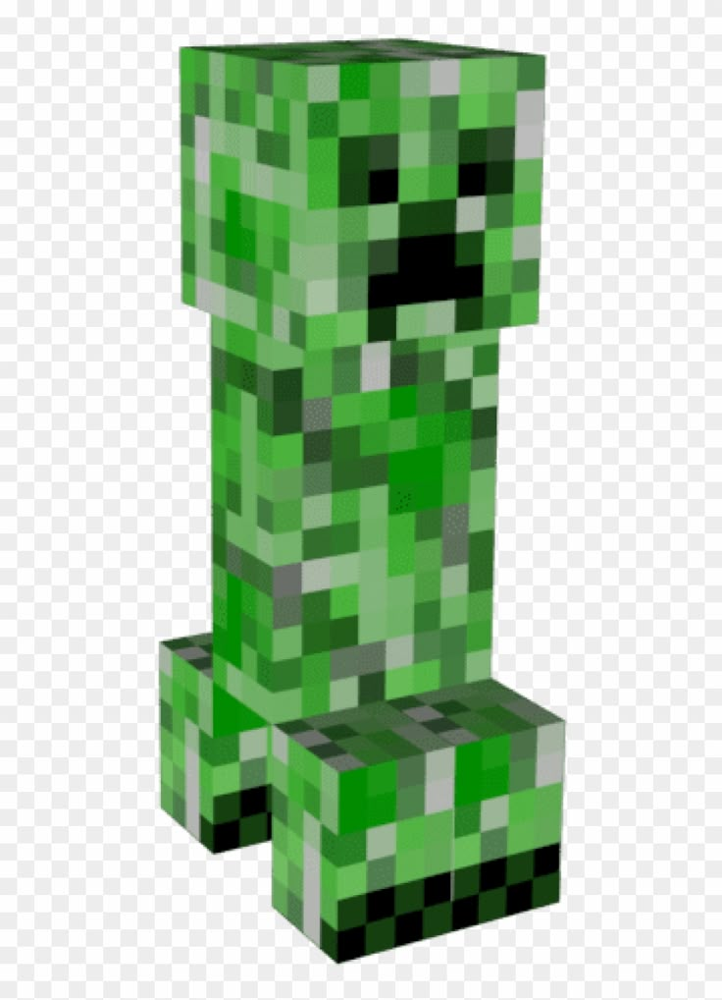
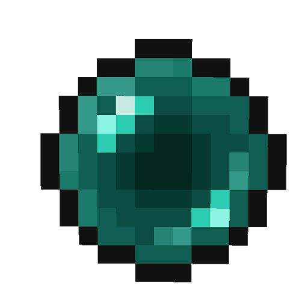
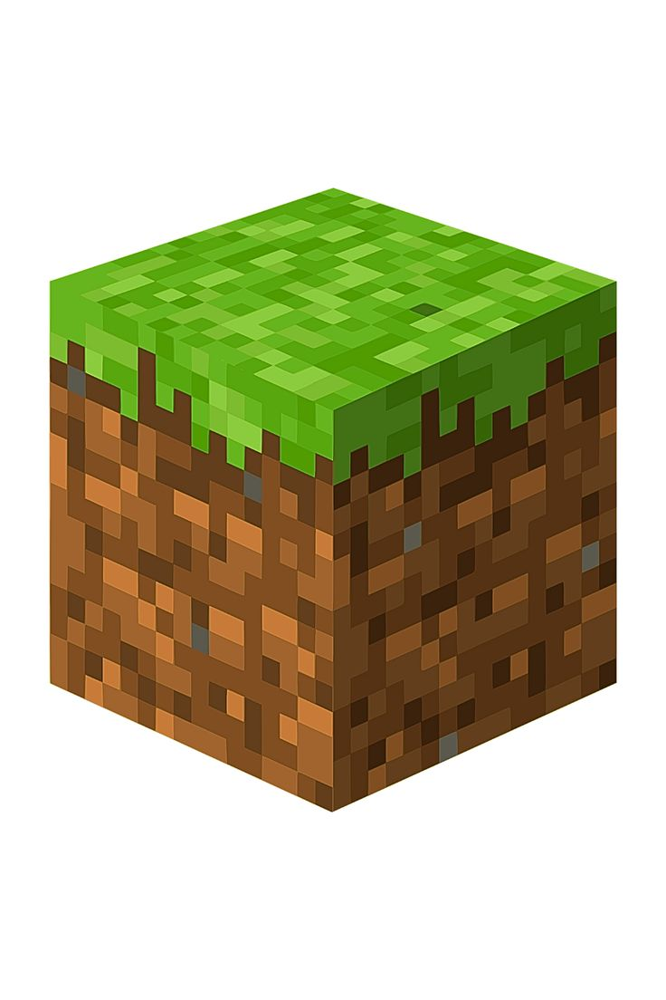

A pickaxe is a tool required to mine ores, rocks, rock-based blocks and metal-based blocks quickly and obtain them as items. A pickaxe mines faster and can obtain more block types as items depending on the material it is made from.

A creeper is a common hostile mob that quietly approaches a player, hisses, and will explode if not retreated from in time. Creeper explosions can destroy blocks and deal massive amounts of damage, which can be completely blocked using a shield. When struck by lightning, a creeper becomes a charged creeper, which amplifies its explosion power and enables mob heads to be obtained from piglins, zombies, skeletons and other creepers it kills. Due to its distinctive appearance and unique destructive method of attack, the creeper has become one of the most iconic mobs of Minecraft, being featured in promotional material and merchandise.

An ender pearl is an item that can be thrown to teleport to where it lands, or used to craft eyes of ender, which are required to access the End.

A grass block is a natural block that generates abundantly across the surface of the Overworld.